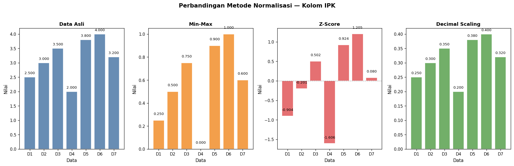
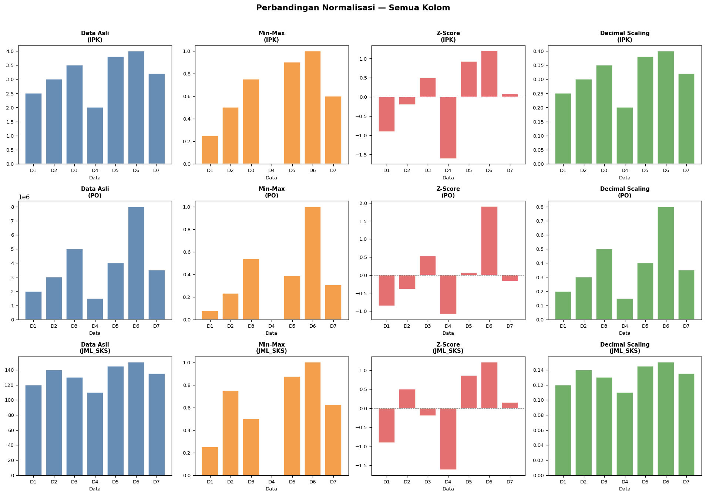

Preprocessing: Missing Values (WKNN) & Normalisasi#
Materi ini mencakup dua tahapan preprocessing penting:
Missing Values — Penyelesaian dengan WKNN (Manual + Code)
Normalisasi Data — Min-Max, Z-Score, Decimal Scaling
1. Missing Values dengan WKNN#
1.1 Apa Itu WKNN?#
WKNN (Weighted K-Nearest Neighbour Imputation) adalah pengembangan dari metode KNNI standar untuk mengisi nilai yang hilang (missing values).
Metode |
Cara Kerja |
|---|---|
KNNI Standar |
Rata-rata sederhana dari K tetangga terdekat |
WKNN |
Rata-rata tertimbang — tetangga yang lebih mirip mendapat bobot lebih besar |
1.2 Rumus WKNN#
Langkah 1 — Hitung Ukuran Kemiripan (\(s_i\))
\(O_i\) = himpunan atribut teramati (tidak hilang) pada data target
Hanya atribut yang tersedia yang digunakan untuk menghitung jarak
Semakin kecil \(\frac{1}{s_i}\) → semakin mirip → \(s_i\) semakin besar
Langkah 2 — Estimasi Nilai Hilang (Weighted Average)
Pembilang: jumlah perkalian Bobot Kemiripan × Nilai Tetangga
Penyebut: jumlah total Bobot Kemiripan
1.3 Studi Kasus — Data IPK, Penghasilan Orang Tua, JML#
Data yang diberikan:
No |
IPK |
PO (Rp) |
JML |
|---|---|---|---|
1 |
2 |
2.000.000 |
2 |
2 |
3 |
3.000.000 |
3 |
3 |
4 |
2.000.000 |
2 |
4 |
2 |
2.000.000 |
3 |
5 |
3 |
3.000.000 |
2 |
6 |
4 |
4.000.000 |
3 |
7 |
2 |
3.000.000 |
? |
Tujuan: Estimasi nilai JML yang hilang pada baris ke-7.
1.4 Penyelesaian Manual#
Tahap 1 — Normalisasi Min-Max
No |
IPK |
PO |
JML |
|---|---|---|---|
1 |
0.0 |
0.0 |
0.0 |
2 |
0.5 |
0.5 |
1.0 |
3 |
1.0 |
0.0 |
0.0 |
4 |
0.0 |
0.0 |
1.0 |
5 |
0.5 |
0.5 |
0.0 |
6 |
1.0 |
1.0 |
1.0 |
7 |
0.0 |
0.5 |
? |
Tahap 2 — Hitung \(\frac{1}{s_i}\) dan \(s_i\)
Atribut teramati pada baris 7: IPK = 0.0 dan PO = 0.5 (JML hilang, tidak dipakai).
Tetangga |
\((IPK_7-IPK_j)^2\) |
\((PO_7-PO_j)^2\) |
\(\frac{1}{s_i}\) (jumlah) |
\(s_i\) |
|---|---|---|---|---|
Baris 1 |
0.00 |
0.25 |
0.25 |
4.000 |
Baris 2 |
0.25 |
0.00 |
0.25 |
4.000 |
Baris 3 |
1.00 |
0.25 |
1.25 |
0.800 |
Baris 4 |
0.00 |
0.25 |
0.25 |
4.000 |
Baris 5 |
0.25 |
0.00 |
0.25 |
4.000 |
Baris 6 |
1.00 |
0.25 |
1.25 |
0.800 |
Tahap 3 — Weighted Average
Denormalisasi:
1.5 Import Library#
import numpy as np
import pandas as pd
import matplotlib
matplotlib.use('Agg')
import matplotlib.pyplot as plt
import warnings
warnings.filterwarnings('ignore')
print("Library berhasil diimport!")
print(f" numpy : {np.__version__}")
print(f" pandas : {pd.__version__}")
Library berhasil diimport!
numpy : 2.4.2
pandas : 3.0.1
1.6 Data Awal#
data = {
'IPK': [2, 3, 4, 2, 3, 4, 2],
'PO': [2_000_000, 3_000_000, 2_000_000, 2_000_000,
3_000_000, 4_000_000, 3_000_000],
'JML': [2, 3, 2, 3, 2, 3, np.nan]
}
df = pd.DataFrame(data, index=range(1, 8))
print("DATA ASLI (dengan missing value):")
print("=" * 40)
print(df.to_string())
print(f"\nJumlah nilai hilang : {df.isnull().sum().sum()} cell")
print(f"Lokasi : baris 7, kolom JML")
DATA ASLI (dengan missing value):
========================================
IPK PO JML
1 2 2000000 2.0
2 3 3000000 3.0
3 4 2000000 2.0
4 2 2000000 3.0
5 3 3000000 2.0
6 4 4000000 3.0
7 2 3000000 NaN
Jumlah nilai hilang : 1 cell
Lokasi : baris 7, kolom JML
1.7 Normalisasi Min-Max#
def minmax_normalize(df):
"""Normalisasi Min-Max: (x - min) / (max - min), output [0, 1]"""
df_norm = df.copy().astype(float)
params = {}
for col in df.columns:
non_null = df[col].dropna()
col_min = non_null.min()
col_max = non_null.max()
params[col] = {'min': col_min, 'max': col_max}
if col_max != col_min:
df_norm[col] = (df[col] - col_min) / (col_max - col_min)
return df_norm, params
df_norm, norm_params = minmax_normalize(df)
print("DATA SETELAH NORMALISASI MIN-MAX:")
print("=" * 40)
print(df_norm.round(4).to_string())
print("\nParameter Normalisasi:")
for col, p in norm_params.items():
print(f" {col:5s} -> min={p['min']:>12,.0f} max={p['max']:>12,.0f}")
DATA SETELAH NORMALISASI MIN-MAX:
========================================
IPK PO JML
1 0.0 0.0 0.0
2 0.5 0.5 1.0
3 1.0 0.0 0.0
4 0.0 0.0 1.0
5 0.5 0.5 0.0
6 1.0 1.0 1.0
7 0.0 0.5 NaN
Parameter Normalisasi:
IPK -> min= 2 max= 4
PO -> min= 2,000,000 max= 4,000,000
JML -> min= 2 max= 3
1.8 Hitung Kemiripan#
def hitung_kemiripan(df_norm, target_idx, missing_col):
"""
Hitung kemiripan s_i antara baris target dan semua tetangga.
Hanya menggunakan atribut yang TERAMATI (tidak hilang).
"""
observed_cols = [c for c in df_norm.columns if c != missing_col]
target_row = df_norm.loc[target_idx, observed_cols]
neighbors = df_norm.drop(index=target_idx)
results = []
for idx, row in neighbors.iterrows():
sq_sum = np.sum((target_row.values - row[observed_cols].values) ** 2)
similarity = np.inf if sq_sum == 0 else 1.0 / sq_sum
results.append({
'Tetangga' : f'Baris {idx}',
'1/s_i (jarak^2)' : round(sq_sum, 4),
's_i (kemiripan)' : round(similarity, 4),
f'{missing_col}_j' : row[missing_col]
})
return pd.DataFrame(results)
sim_df = hitung_kemiripan(df_norm, target_idx=7, missing_col='JML')
print("TABEL KEMIRIPAN — TARGET: Baris 7")
print("=" * 55)
print(sim_df.to_string(index=False))
TABEL KEMIRIPAN — TARGET: Baris 7
=======================================================
Tetangga 1/s_i (jarak^2) s_i (kemiripan) JML_j
Baris 1 0.25 4.0 0.0
Baris 2 0.25 4.0 1.0
Baris 3 1.25 0.8 0.0
Baris 4 0.25 4.0 1.0
Baris 5 0.25 4.0 0.0
Baris 6 1.25 0.8 1.0
1.9 Estimasi Nilai Hilang#
def wknn_impute_single(df_norm, norm_params, target_idx, missing_col, K=None):
"""Estimasi SATU nilai hilang menggunakan Weighted KNN Imputation."""
sim_df = hitung_kemiripan(df_norm, target_idx, missing_col)
inf_mask = sim_df['s_i (kemiripan)'] == np.inf
if inf_mask.any():
est_norm = sim_df.loc[inf_mask, f'{missing_col}_j'].mean()
else:
sim_df = sim_df.sort_values('s_i (kemiripan)', ascending=False)
if K is not None:
sim_df = sim_df.head(K)
weights = sim_df['s_i (kemiripan)'].values
values = sim_df[f'{missing_col}_j'].values
pembilang = np.sum(weights * values)
penyebut = np.sum(weights)
est_norm = pembilang / penyebut
print(f"Pembilang (sum s_i x {missing_col}_j) = {pembilang:.4f}")
print(f"Penyebut (sum s_i) = {penyebut:.4f}")
print(f"{missing_col} (norm) = {est_norm:.4f}")
p = norm_params[missing_col]
est_val = est_norm * (p['max'] - p['min']) + p['min']
print(f"\nDenormalisasi:")
print(f" {missing_col} = {est_norm:.4f} x ({p['max']} - {p['min']}) + {p['min']}")
print(f" {missing_col} = {est_val:.4f}")
return est_val
print("ESTIMASI NILAI HILANG (Baris 7, JML)")
print("=" * 45)
jml_estimasi = wknn_impute_single(
df_norm, norm_params, target_idx=7, missing_col='JML'
)
print(f"\n>>> JML yang hilang diestimasi = {jml_estimasi:.2f} <<<")
ESTIMASI NILAI HILANG (Baris 7, JML)
=============================================
Pembilang (sum s_i x JML_j) = 8.8000
Penyebut (sum s_i) = 17.6000
JML (norm) = 0.5000
Denormalisasi:
JML = 0.5000 x (3.0 - 2.0) + 2.0
JML = 2.5000
>>> JML yang hilang diestimasi = 2.50 <<<
1.10 WKNN General (Otomatis)#
def wknn_imputation(df, K=None, verbose=True):
"""WKNN Imputation otomatis untuk seluruh DataFrame."""
df_result = df.copy().astype(float)
df_norm_all, np_all = minmax_normalize(df_result)
missing_pos = [
(i, c) for i in df_result.index
for c in df_result.columns
if pd.isna(df_result.loc[i, c])
]
if not missing_pos:
print("Tidak ada nilai hilang!")
return df_result
print(f"Ditemukan {len(missing_pos)} nilai hilang:")
for (idx, col) in missing_pos:
print(f" -> baris {idx}, kolom '{col}'")
print()
for (idx, col) in missing_pos:
obs = [c for c in df_result.columns
if c != col and not pd.isna(df_result.loc[idx, c])]
t_vals = df_norm_all.loc[idx, obs].values
sims, nvals = [], []
for nidx in df_result.index:
if nidx == idx or pd.isna(df_result.loc[nidx, col]):
continue
sq = np.sum((t_vals - df_norm_all.loc[nidx, obs].values) ** 2)
sims.append(np.inf if sq == 0 else 1.0 / sq)
nvals.append(df_norm_all.loc[nidx, col])
w, v = np.array(sims), np.array(nvals)
if K is not None:
top = np.argsort(w)[::-1][:K]
w, v = w[top], v[top]
est_n = np.mean(v[np.isinf(w)]) if np.any(np.isinf(w)) \
else np.sum(w * v) / np.sum(w)
p = np_all[col]
est_val = est_n * (p['max'] - p['min']) + p['min']
df_result.loc[idx, col] = est_val
if verbose:
print(f" Baris {idx}, Kolom '{col}' -> diisi: {est_val:.4f}")
return df_result
print("WKNN IMPUTATION — OTOMATIS")
print("=" * 45)
df_filled = wknn_imputation(df)
print("\nHASIL AKHIR:")
print("=" * 45)
print(df_filled.to_string())
print(f"\nMissing values tersisa: {df_filled.isnull().sum().sum()}")
WKNN IMPUTATION — OTOMATIS
=============================================
Ditemukan 1 nilai hilang:
-> baris 7, kolom 'JML'
Baris 7, Kolom 'JML' -> diisi: 2.5000
HASIL AKHIR:
=============================================
IPK PO JML
1 2.0 2000000.0 2.0
2 3.0 3000000.0 3.0
3 4.0 2000000.0 2.0
4 2.0 2000000.0 3.0
5 3.0 3000000.0 2.0
6 4.0 4000000.0 3.0
7 2.0 3000000.0 2.5
Missing values tersisa: 0
2. WKNN untuk Data Klasifikasi#
Jika data memiliki label kelas, gunakan Same-Class Weighting — hanya tetangga dengan kelas yang sama yang dipertimbangkan.
ID |
Pengalaman |
Skor Tes |
Kelas |
|---|---|---|---|
y1 |
2 |
70 |
0 (Gagal) |
y2 |
3 |
75 |
0 (Gagal) |
y3 |
5 |
85 |
1 (Lulus) |
y4 |
6 |
88 |
1 (Lulus) |
y5 |
1 |
65 |
0 (Gagal) |
y6 |
7 |
92 |
1 (Lulus) |
y7 |
5.5 |
? |
1 (Lulus) |
2.1 Data Klasifikasi#
data_klas = {
'Pengalaman': [2, 3, 5, 6, 1, 7, 5.5],
'Skor_Tes': [70, 75, 85, 88, 65, 92, np.nan],
'Kelas': [0, 0, 1, 1, 0, 1, 1]
}
df_klas = pd.DataFrame(data_klas, index=[f'y{i}' for i in range(1, 8)])
print("DATA KLASIFIKASI:")
print("=" * 38)
print(df_klas.to_string())
DATA KLASIFIKASI:
======================================
Pengalaman Skor_Tes Kelas
y1 2.0 70.0 0
y2 3.0 75.0 0
y3 5.0 85.0 1
y4 6.0 88.0 1
y5 1.0 65.0 0
y6 7.0 92.0 1
y7 5.5 NaN 1
2.2 Hitung Kemiripan dan Filter Kelas#
target_pengalaman = 5.5
target_kelas = 1
tetangga = df_klas.dropna(subset=['Skor_Tes']).copy()
tetangga['selisih'] = tetangga['Pengalaman'] - target_pengalaman
tetangga['kuadrat'] = tetangga['selisih'] ** 2
tetangga['kemiripan'] = 1.0 / tetangga['kuadrat']
print("LANGKAH 1 — Kemiripan Semua Tetangga:")
print("=" * 58)
print(tetangga[['Pengalaman','Skor_Tes','Kelas',
'selisih','kuadrat','kemiripan']].to_string())
same_class = tetangga[tetangga['Kelas'] == target_kelas].copy()
print(f"\nLANGKAH 2 — Filter Kelas = {target_kelas} (Lulus):")
print("=" * 45)
print(same_class[['Pengalaman','Skor_Tes','Kelas','kemiripan']].to_string())
LANGKAH 1 — Kemiripan Semua Tetangga:
==========================================================
Pengalaman Skor_Tes Kelas selisih kuadrat kemiripan
y1 2.0 70.0 0 -3.5 12.25 0.081633
y2 3.0 75.0 0 -2.5 6.25 0.160000
y3 5.0 85.0 1 -0.5 0.25 4.000000
y4 6.0 88.0 1 0.5 0.25 4.000000
y5 1.0 65.0 0 -4.5 20.25 0.049383
y6 7.0 92.0 1 1.5 2.25 0.444444
LANGKAH 2 — Filter Kelas = 1 (Lulus):
=============================================
Pengalaman Skor_Tes Kelas kemiripan
y3 5.0 85.0 1 4.000000
y4 6.0 88.0 1 4.000000
y6 7.0 92.0 1 0.444444
2.3 Estimasi Skor Tes#
w = same_class['kemiripan'].values
v = same_class['Skor_Tes'].values
pembilang = np.sum(w * v)
penyebut = np.sum(w)
skor_pred = pembilang / penyebut
print("LANGKAH 3 — Weighted Average:")
print("=" * 45)
print("\nRincian Pembilang:")
for wi, vi, idx in zip(w, v, same_class.index):
print(f" {idx}: {wi:.3f} x {vi} = {wi*vi:.3f}")
print(f"\nPembilang = {pembilang:.3f}")
print(f"Penyebut = {penyebut:.4f}")
print(f"\n>>> Skor Tes diestimasi = {skor_pred:.2f} <<<")
LANGKAH 3 — Weighted Average:
=============================================
Rincian Pembilang:
y3: 4.000 x 85.0 = 340.000
y4: 4.000 x 88.0 = 352.000
y6: 0.444 x 92.0 = 40.889
Pembilang = 732.889
Penyebut = 8.4444
>>> Skor Tes diestimasi = 86.79 <<<
3. Normalisasi Data#
3.1 Mengapa Normalisasi Diperlukan?#
Normalisasi adalah tahapan preprocessing untuk menyeragamkan skala fitur data sebelum digunakan pada algoritma machine learning.
Alasan pentingnya normalisasi:
Algoritma berbasis jarak (KNN, SVM, K-Means) sensitif terhadap skala
Gradient descent konvergen lebih cepat
Mencegah fitur bernilai besar mendominasi fitur bernilai kecil
3.2 Tiga Metode Normalisasi#
No |
Metode |
Rumus |
Output |
|---|---|---|---|
1 |
Min-Max |
\(\dfrac{x - x_{min}}{x_{max} - x_{min}}\) |
\([0,\ 1]\) |
2 |
Z-Score |
\(\dfrac{x - \mu}{\sigma}\) |
\(\approx[-3,\ 3]\) |
3 |
Decimal Scaling |
\(\dfrac{x}{10^j},\ j = \lceil\log_{10}(\max|x|)\rceil\) |
\([-1,\ 1]\) |
3.3 Import Library & Data#
from sklearn.preprocessing import MinMaxScaler, StandardScaler
import math
# Data contoh dengan skala berbeda
data_raw = pd.DataFrame({
'IPK' : [2.5, 3.0, 3.5, 2.0, 3.8, 4.0, 3.2],
'PO' : [2_000_000, 3_000_000, 5_000_000, 1_500_000,
4_000_000, 8_000_000, 3_500_000],
'JML_SKS': [120, 140, 130, 110, 145, 150, 135]
}, index=[f'D{i+1}' for i in range(7)])
print("DATA ASLI (skala berbeda-beda):")
print("=" * 52)
print(data_raw.to_string())
print("\nStatistik Deskriptif:")
print(data_raw.describe().round(2))
DATA ASLI (skala berbeda-beda):
====================================================
IPK PO JML_SKS
D1 2.5 2000000 120
D2 3.0 3000000 140
D3 3.5 5000000 130
D4 2.0 1500000 110
D5 3.8 4000000 145
D6 4.0 8000000 150
D7 3.2 3500000 135
Statistik Deskriptif:
IPK PO JML_SKS
count 7.00 7.00 7.00
mean 3.14 3857142.86 132.86
std 0.71 2173980.33 14.10
min 2.00 1500000.00 110.00
25% 2.75 2500000.00 125.00
50% 3.20 3500000.00 135.00
75% 3.65 4500000.00 142.50
max 4.00 8000000.00 150.00
3.4 Metode 1 — Min-Max Normalization#
Konsep: Menggeser dan menykalakan data sehingga nilai minimum menjadi 0 dan nilai maksimum menjadi 1.
Kelebihan: Mudah dipahami, output range tetap [0, 1]
Kekurangan: Sensitif terhadap outlier (outlier menarik seluruh data ke ujung range)
# ── Fungsi Manual ──────────────────────────────────────────
def minmax_manual(df):
"""
Min-Max Normalization (fungsi manual).
Rumus : (x - min) / (max - min)
Output : [0, 1]
"""
result = pd.DataFrame(index=df.index, columns=df.columns, dtype=float)
info = {}
for col in df.columns:
x_min = df[col].min()
x_max = df[col].max()
info[col] = {'x_min': x_min, 'x_max': x_max}
result[col] = (df[col] - x_min) / (x_max - x_min)
return result, info
# ── Dengan sklearn ─────────────────────────────────────────
scaler_mm = MinMaxScaler(feature_range=(0, 1))
data_mm_sk = pd.DataFrame(
scaler_mm.fit_transform(data_raw),
columns=data_raw.columns,
index=data_raw.index
).round(4)
# ── Fungsi manual ──────────────────────────────────────────
data_mm_man, mm_info = minmax_manual(data_raw)
data_mm_man = data_mm_man.round(4)
# ── Tampilkan ──────────────────────────────────────────────
print("METODE 1: MIN-MAX NORMALIZATION")
print("Rumus: (x - x_min) / (x_max - x_min)")
print("=" * 52)
print("\nParameter (min & max tiap kolom):")
for col, v in mm_info.items():
print(f" {col:8s} -> x_min = {v['x_min']:>12,.1f} | x_max = {v['x_max']:>12,.1f}")
print("\nHasil [sklearn]:")
print(data_mm_sk)
print("\nHasil [Manual]:")
print(data_mm_man)
# Verifikasi kesamaan
selisih = (data_mm_sk - data_mm_man).abs().max().max()
print(f"\nSelisih sklearn vs manual : {selisih:.6f} (0 = identik)")
print(f"Range output : [{data_mm_sk.min().min():.2f}, {data_mm_sk.max().max():.2f}]")
METODE 1: MIN-MAX NORMALIZATION
Rumus: (x - x_min) / (x_max - x_min)
====================================================
Parameter (min & max tiap kolom):
IPK -> x_min = 2.0 | x_max = 4.0
PO -> x_min = 1,500,000.0 | x_max = 8,000,000.0
JML_SKS -> x_min = 110.0 | x_max = 150.0
Hasil [sklearn]:
IPK PO JML_SKS
D1 0.25 0.0769 0.250
D2 0.50 0.2308 0.750
D3 0.75 0.5385 0.500
D4 0.00 0.0000 0.000
D5 0.90 0.3846 0.875
D6 1.00 1.0000 1.000
D7 0.60 0.3077 0.625
Hasil [Manual]:
IPK PO JML_SKS
D1 0.25 0.0769 0.250
D2 0.50 0.2308 0.750
D3 0.75 0.5385 0.500
D4 0.00 0.0000 0.000
D5 0.90 0.3846 0.875
D6 1.00 1.0000 1.000
D7 0.60 0.3077 0.625
Selisih sklearn vs manual : 0.000000 (0 = identik)
Range output : [0.00, 1.00]
# Contoh perhitungan langkah demi langkah untuk IPK
print("Contoh Perhitungan Manual — Kolom IPK:")
print("=" * 45)
ipk = data_raw['IPK']
x_min = ipk.min()
x_max = ipk.max()
print(f" x_min = {x_min} | x_max = {x_max}")
print()
for idx, val in ipk.items():
hasil = (val - x_min) / (x_max - x_min)
print(f" {idx}: ({val} - {x_min}) / ({x_max} - {x_min}) = {hasil:.4f}")
Contoh Perhitungan Manual — Kolom IPK:
=============================================
x_min = 2.0 | x_max = 4.0
D1: (2.5 - 2.0) / (4.0 - 2.0) = 0.2500
D2: (3.0 - 2.0) / (4.0 - 2.0) = 0.5000
D3: (3.5 - 2.0) / (4.0 - 2.0) = 0.7500
D4: (2.0 - 2.0) / (4.0 - 2.0) = 0.0000
D5: (3.8 - 2.0) / (4.0 - 2.0) = 0.9000
D6: (4.0 - 2.0) / (4.0 - 2.0) = 1.0000
D7: (3.2 - 2.0) / (4.0 - 2.0) = 0.6000
3.5 Metode 2 — Z-Score Standardization#
Konsep: Mengubah distribusi data sehingga memiliki mean = 0 dan standar deviasi = 1.
dimana \(\mu\) = mean dan \(\sigma\) = standar deviasi.
Kelebihan: Cocok untuk data berdistribusi normal, tidak terpengaruh outlier sebesar Min-Max
Kekurangan: Output tidak memiliki batas range yang tetap
# ── Fungsi Manual ──────────────────────────────────────────
def zscore_manual(df):
"""
Z-Score Standardization (fungsi manual).
Rumus : (x - mean) / std
Output : mean = 0, std = 1
"""
result = pd.DataFrame(index=df.index, columns=df.columns, dtype=float)
info = {}
for col in df.columns:
mu = df[col].mean()
sigma = df[col].std()
info[col] = {'mean': mu, 'std': sigma}
result[col] = (df[col] - mu) / sigma
return result, info
# ── Dengan sklearn ─────────────────────────────────────────
scaler_std = StandardScaler()
data_zs_sk = pd.DataFrame(
scaler_std.fit_transform(data_raw),
columns=data_raw.columns,
index=data_raw.index
).round(4)
# ── Fungsi manual ──────────────────────────────────────────
data_zs_man, zs_info = zscore_manual(data_raw)
data_zs_man = data_zs_man.round(4)
# ── Tampilkan ──────────────────────────────────────────────
print("METODE 2: Z-SCORE STANDARDIZATION")
print("Rumus: (x - mean) / std")
print("=" * 52)
print("\nParameter (mean & std tiap kolom):")
for col, v in zs_info.items():
print(f" {col:8s} -> mean = {v['mean']:>12,.2f} | std = {v['std']:>12,.2f}")
print("\nHasil [sklearn]:")
print(data_zs_sk)
print("\nHasil [Manual]:")
print(data_zs_man)
print(f"\nVerifikasi mean setelah Z-Score : {data_zs_sk.mean().round(10).to_dict()}")
print(f"Verifikasi std setelah Z-Score : {data_zs_sk.std().round(4).to_dict()}")
METODE 2: Z-SCORE STANDARDIZATION
Rumus: (x - mean) / std
====================================================
Parameter (mean & std tiap kolom):
IPK -> mean = 3.14 | std = 0.71
PO -> mean = 3,857,142.86 | std = 2,173,980.33
JML_SKS -> mean = 132.86 | std = 14.10
Hasil [sklearn]:
IPK PO JML_SKS
D1 -0.9760 -0.9227 -0.9849
D2 -0.2169 -0.4259 0.5472
D3 0.5422 0.5678 -0.2189
D4 -1.7350 -1.1711 -1.7510
D5 0.9976 0.0710 0.9302
D6 1.3013 2.0583 1.3132
D7 0.0868 -0.1774 0.1642
Hasil [Manual]:
IPK PO JML_SKS
D1 -0.9036 -0.8543 -0.9119
D2 -0.2008 -0.3943 0.5066
D3 0.5020 0.5257 -0.2026
D4 -1.6063 -1.0843 -1.6211
D5 0.9236 0.0657 0.8612
D6 1.2047 1.9057 1.2158
D7 0.0803 -0.1643 0.1520
Verifikasi mean setelah Z-Score : {'IPK': 0.0, 'PO': -0.0, 'JML_SKS': 0.0}
Verifikasi std setelah Z-Score : {'IPK': 1.0801, 'PO': 1.0801, 'JML_SKS': 1.0801}
# Contoh perhitungan langkah demi langkah untuk IPK
print("Contoh Perhitungan Manual — Kolom IPK:")
print("=" * 45)
ipk = data_raw['IPK']
mu = ipk.mean()
sigma = ipk.std()
print(f" mean (mu) = {mu:.4f}")
print(f" std (sigma) = {sigma:.4f}")
print()
for idx, val in ipk.items():
hasil = (val - mu) / sigma
print(f" {idx}: ({val} - {mu:.4f}) / {sigma:.4f} = {hasil:.4f}")
Contoh Perhitungan Manual — Kolom IPK:
=============================================
mean (mu) = 3.1429
std (sigma) = 0.7115
D1: (2.5 - 3.1429) / 0.7115 = -0.9036
D2: (3.0 - 3.1429) / 0.7115 = -0.2008
D3: (3.5 - 3.1429) / 0.7115 = 0.5020
D4: (2.0 - 3.1429) / 0.7115 = -1.6063
D5: (3.8 - 3.1429) / 0.7115 = 0.9236
D6: (4.0 - 3.1429) / 0.7115 = 1.2047
D7: (3.2 - 3.1429) / 0.7115 = 0.0803
3.6 Metode 3 — Decimal Scaling#
Konsep: Membagi setiap nilai dengan pangkat 10 tertentu sehingga nilai absolut maksimum menjadi kurang dari 1.
dimana \(j\) adalah bilangan bulat terkecil sehingga \(\max(|x'|) < 1\):
Kelebihan: Sangat sederhana, mempertahankan proporsi antar data
Kekurangan: Output range bergantung pada skala data asli
# ── Fungsi Manual ──────────────────────────────────────────
def decimal_scaling_manual(df):
"""
Decimal Scaling (fungsi manual).
Rumus : x / 10^j
j : ceil(log10(max|x|))
Output : nilai absolut maks < 1
"""
result = pd.DataFrame(index=df.index, columns=df.columns, dtype=float)
info = {}
for col in df.columns:
max_abs = df[col].abs().max()
j = math.ceil(math.log10(max_abs)) if max_abs >= 1 else 1
info[col] = {'max_abs': max_abs, 'j': j, 'pembagi': 10**j}
result[col] = df[col] / (10 ** j)
return result, info
# ── Tidak ada sklearn khusus, pakai fungsi manual ──────────
data_ds_man, ds_info = decimal_scaling_manual(data_raw)
data_ds_man = data_ds_man.round(6)
# ── Tampilkan ──────────────────────────────────────────────
print("METODE 3: DECIMAL SCALING")
print("Rumus: x / 10^j | j = ceil(log10(max|x|))")
print("=" * 52)
print("\nParameter (nilai j & pembagi tiap kolom):")
for col, v in ds_info.items():
print(f" {col:8s} -> max|x| = {v['max_abs']:>12,.1f} | j = {v['j']} | pembagi = {v['pembagi']:>12,.0f}")
print("\nHasil [Manual]:")
print(data_ds_man)
print(f"\nVerifikasi max|x'| tiap kolom (harus < 1):")
for col in data_ds_man.columns:
print(f" {col:8s} -> max|x'| = {data_ds_man[col].abs().max():.6f}")
METODE 3: DECIMAL SCALING
Rumus: x / 10^j | j = ceil(log10(max|x|))
====================================================
Parameter (nilai j & pembagi tiap kolom):
IPK -> max|x| = 4.0 | j = 1 | pembagi = 10
PO -> max|x| = 8,000,000.0 | j = 7 | pembagi = 10,000,000
JML_SKS -> max|x| = 150.0 | j = 3 | pembagi = 1,000
Hasil [Manual]:
IPK PO JML_SKS
D1 0.25 0.20 0.120
D2 0.30 0.30 0.140
D3 0.35 0.50 0.130
D4 0.20 0.15 0.110
D5 0.38 0.40 0.145
D6 0.40 0.80 0.150
D7 0.32 0.35 0.135
Verifikasi max|x'| tiap kolom (harus < 1):
IPK -> max|x'| = 0.400000
PO -> max|x'| = 0.800000
JML_SKS -> max|x'| = 0.150000
# Contoh perhitungan langkah demi langkah untuk semua kolom
print("Contoh Perhitungan Manual — Decimal Scaling:")
print("=" * 52)
for col in data_raw.columns:
max_abs = data_raw[col].abs().max()
j = math.ceil(math.log10(max_abs)) if max_abs >= 1 else 1
pembagi = 10 ** j
print(f"\nKolom {col}:")
print(f" max|x| = {max_abs:.1f}")
print(f" j = ceil(log10({max_abs:.1f})) = {j}")
print(f" pembagi = 10^{j} = {pembagi:,}")
for idx, val in data_raw[col].items():
hasil = val / pembagi
print(f" {idx}: {val:>12,.1f} / {pembagi:>12,.0f} = {hasil:.6f}")
Contoh Perhitungan Manual — Decimal Scaling:
====================================================
Kolom IPK:
max|x| = 4.0
j = ceil(log10(4.0)) = 1
pembagi = 10^1 = 10
D1: 2.5 / 10 = 0.250000
D2: 3.0 / 10 = 0.300000
D3: 3.5 / 10 = 0.350000
D4: 2.0 / 10 = 0.200000
D5: 3.8 / 10 = 0.380000
D6: 4.0 / 10 = 0.400000
D7: 3.2 / 10 = 0.320000
Kolom PO:
max|x| = 8000000.0
j = ceil(log10(8000000.0)) = 7
pembagi = 10^7 = 10,000,000
D1: 2,000,000.0 / 10,000,000 = 0.200000
D2: 3,000,000.0 / 10,000,000 = 0.300000
D3: 5,000,000.0 / 10,000,000 = 0.500000
D4: 1,500,000.0 / 10,000,000 = 0.150000
D5: 4,000,000.0 / 10,000,000 = 0.400000
D6: 8,000,000.0 / 10,000,000 = 0.800000
D7: 3,500,000.0 / 10,000,000 = 0.350000
Kolom JML_SKS:
max|x| = 150.0
j = ceil(log10(150.0)) = 3
pembagi = 10^3 = 1,000
D1: 120.0 / 1,000 = 0.120000
D2: 140.0 / 1,000 = 0.140000
D3: 130.0 / 1,000 = 0.130000
D4: 110.0 / 1,000 = 0.110000
D5: 145.0 / 1,000 = 0.145000
D6: 150.0 / 1,000 = 0.150000
D7: 135.0 / 1,000 = 0.135000
3.7 Perbandingan Ketiga Metode#
# ── Tabel perbandingan hasil normalisasi (kolom IPK) ───────
print("PERBANDINGAN HASIL NORMALISASI — Kolom IPK:")
print("=" * 60)
tabel = pd.DataFrame({
'Data Asli' : data_raw['IPK'].values,
'Min-Max' : data_mm_man['IPK'].values,
'Z-Score' : data_zs_man['IPK'].values,
'Decimal Scaling' : data_ds_man['IPK'].values,
}, index=data_raw.index)
print(tabel.to_string())
print("\n\nStatistik Setelah Normalisasi — Kolom IPK:")
print("=" * 60)
stat = pd.DataFrame({
'Metode' : ['Data Asli','Min-Max','Z-Score','Decimal Scaling'],
'Min' : [data_raw['IPK'].min(), data_mm_man['IPK'].min(),
data_zs_man['IPK'].min(), data_ds_man['IPK'].min()],
'Max' : [data_raw['IPK'].max(), data_mm_man['IPK'].max(),
data_zs_man['IPK'].max(), data_ds_man['IPK'].max()],
'Mean' : [data_raw['IPK'].mean(), data_mm_man['IPK'].mean(),
data_zs_man['IPK'].mean(),data_ds_man['IPK'].mean()],
'Std' : [data_raw['IPK'].std(), data_mm_man['IPK'].std(),
data_zs_man['IPK'].std(), data_ds_man['IPK'].std()],
'Max |x_norm|' : [data_raw['IPK'].abs().max(), data_mm_man['IPK'].abs().max(),
data_zs_man['IPK'].abs().max(), data_ds_man['IPK'].abs().max()],
}).round(4)
print(stat.to_string(index=False))
PERBANDINGAN HASIL NORMALISASI — Kolom IPK:
============================================================
Data Asli Min-Max Z-Score Decimal Scaling
D1 2.5 0.25 -0.9036 0.25
D2 3.0 0.50 -0.2008 0.30
D3 3.5 0.75 0.5020 0.35
D4 2.0 0.00 -1.6063 0.20
D5 3.8 0.90 0.9236 0.38
D6 4.0 1.00 1.2047 0.40
D7 3.2 0.60 0.0803 0.32
Statistik Setelah Normalisasi — Kolom IPK:
============================================================
Metode Min Max Mean Std Max |x_norm|
Data Asli 2.0000 4.0000 3.1429 0.7115 4.0000
Min-Max 0.0000 1.0000 0.5714 0.3557 1.0000
Z-Score -1.6063 1.2047 -0.0000 1.0000 1.6063
Decimal Scaling 0.2000 0.4000 0.3143 0.0711 0.4000
# ── Visualisasi perbandingan ────────────────────────────────
fig, axes = plt.subplots(1, 4, figsize=(16, 5), sharey=False)
fig.suptitle('Perbandingan Metode Normalisasi — Kolom IPK',
fontsize=13, fontweight='bold', y=1.02)
datasets = [
('Data Asli', data_raw['IPK'], '#4e79a7'),
('Min-Max', data_mm_man['IPK'], '#f28e2b'),
('Z-Score', data_zs_man['IPK'], '#e15759'),
('Decimal Scaling', data_ds_man['IPK'], '#59a14f'),
]
labels = list(data_raw.index)
for ax, (nama, vals, warna) in zip(axes, datasets):
bars = ax.bar(labels, vals, color=warna, alpha=0.85,
edgecolor='white', linewidth=1.2)
ax.set_title(nama, fontweight='bold', fontsize=11)
ax.set_xlabel('Data')
ax.set_ylabel('Nilai')
ax.axhline(y=0, color='black', linewidth=0.8, linestyle='--', alpha=0.4)
ax.tick_params(labelsize=9)
rng = float(vals.max()) - float(vals.min())
for bar, v in zip(bars, vals):
ax.text(bar.get_x() + bar.get_width() / 2,
float(v) + rng * 0.04,
f'{v:.3f}', ha='center', va='bottom', fontsize=8)
plt.tight_layout()
plt.savefig('perbandingan_normalisasi.png', dpi=120, bbox_inches='tight')
plt.show()
print("Grafik tersimpan: perbandingan_normalisasi.png")
Grafik tersimpan: perbandingan_normalisasi.png

# ── Visualisasi semua kolom (heatmap perbandingan) ──────────
fig, axes = plt.subplots(3, 4, figsize=(16, 11))
fig.suptitle('Perbandingan Normalisasi — Semua Kolom',
fontsize=13, fontweight='bold', y=1.01)
kolom_list = ['IPK', 'PO', 'JML_SKS']
metode_dict = {
'Data Asli' : data_raw,
'Min-Max' : data_mm_man,
'Z-Score' : data_zs_man,
'Decimal Scaling' : data_ds_man,
}
warna_dict = {
'Data Asli' : '#4e79a7',
'Min-Max' : '#f28e2b',
'Z-Score' : '#e15759',
'Decimal Scaling' : '#59a14f',
}
for row_i, kolom in enumerate(kolom_list):
for col_i, (metode, data) in enumerate(metode_dict.items()):
ax = axes[row_i][col_i]
vals = data[kolom]
bars = ax.bar(labels, vals, color=warna_dict[metode],
alpha=0.85, edgecolor='white', linewidth=1)
ax.set_title(f'{metode}\n({kolom})', fontsize=9, fontweight='bold')
ax.axhline(y=0, color='black', linewidth=0.7, linestyle='--', alpha=0.4)
ax.tick_params(labelsize=8)
ax.set_xlabel('Data', fontsize=8)
plt.tight_layout()
plt.savefig('perbandingan_semua_kolom.png', dpi=120, bbox_inches='tight')
plt.show()
print("Grafik tersimpan: perbandingan_semua_kolom.png")
Grafik tersimpan: perbandingan_semua_kolom.png

3.8 Panduan Memilih Metode#
panduan = pd.DataFrame({
'Metode' : ['Min-Max', 'Z-Score', 'Decimal Scaling'],
'Rumus' : ['(x-min)/(max-min)', '(x-mean)/std', 'x / 10^j'],
'Output Range' : ['[0, 1]', '~[-3, 3]', '< 1 (absolut)'],
'Cocok Untuk' : [
'Data tanpa outlier ekstrim, butuh range tetap [0,1]',
'Data berdistribusi normal (Gaussian)',
'Data dengan magnitude besar, konversi desimal sederhana'
],
'Kelemahan' : [
'Sensitif terhadap outlier',
'Output tidak berbatas tetap',
'Tidak mempertimbangkan distribusi data'
]
})
print("PANDUAN MEMILIH METODE NORMALISASI:")
print("=" * 75)
for _, row in panduan.iterrows():
print(f"\n Metode : {row['Metode']}")
print(f" Rumus : {row['Rumus']}")
print(f" Output : {row['Output Range']}")
print(f" Cocok : {row['Cocok Untuk']}")
print(f" Lemah : {row['Kelemahan']}")
print(" " + "-"*60)
PANDUAN MEMILIH METODE NORMALISASI:
===========================================================================
Metode : Min-Max
Rumus : (x-min)/(max-min)
Output : [0, 1]
Cocok : Data tanpa outlier ekstrim, butuh range tetap [0,1]
Lemah : Sensitif terhadap outlier
------------------------------------------------------------
Metode : Z-Score
Rumus : (x-mean)/std
Output : ~[-3, 3]
Cocok : Data berdistribusi normal (Gaussian)
Lemah : Output tidak berbatas tetap
------------------------------------------------------------
Metode : Decimal Scaling
Rumus : x / 10^j
Output : < 1 (absolut)
Cocok : Data dengan magnitude besar, konversi desimal sederhana
Lemah : Tidak mempertimbangkan distribusi data
------------------------------------------------------------
Ringkasan#
Topik |
Poin Utama |
|---|---|
WKNN |
Tetangga mirip diberi bobot lebih besar saat imputasi |
Same-Class |
Filter tetangga satu kelas untuk estimasi lebih akurat |
Min-Max |
Skalakan ke \([0,1]\) — sensitif terhadap outlier |
Z-Score |
Standarisasi ke mean=0, std=1 — cocok distribusi normal |
Decimal Scaling |
Bagi dengan \(10^j\) — sederhana, cocok data berskala besar |
Catatan penting: Selalu hitung parameter normalisasi dari data training saja, lalu terapkan ke data testing untuk menghindari data leakage.